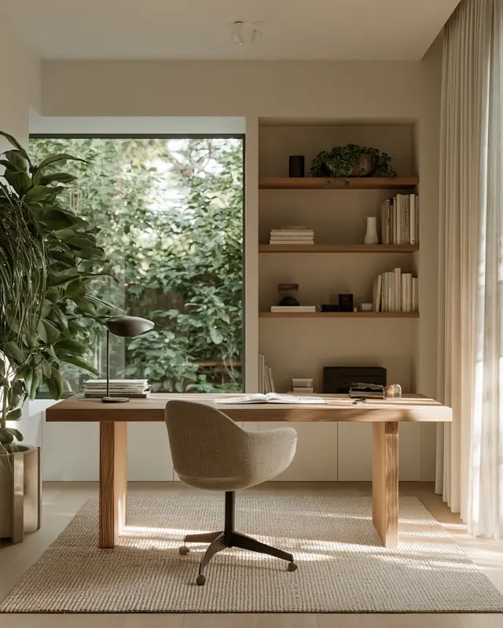

ركن مكتب في البيت: من أين نبدأ؟
أغلب مكاتب البيت في السعودية ركن في غرفة أو زاوية في الصالة مساحتها بين 5 و7 أمتار مربعة، مثل 2×3.5 أو 2.5×2.8 متر. يتحدد نجاح الركن بثلاثة أشياء: مكتب بالمقاس الصحيح، وتخزين يخفي الفوضى، وإضاءة لا تتعب العين.
توزيع مقترح بالمقاسات
- المكتب: بعرض 120 إلى 140 سم وعمق 60 إلى 70 سم، ويُفضّل أن يكون الظهر للجدار والنظر للغرفة أو بجانب النافذة لا أمامها مباشرة حتى لا ينعكس الضوء على الشاشة.
- الكرسي: مسافة 90 سم خلف المكتب على الأقل ليتحرك الكرسي بحرية.
- التخزين المخفي: خزانة مغلقة بعمق 35 إلى 40 سم على جدار واحد بارتفاع السقف، تخفي الأوراق والأجهزة والأسلاك.
- رف الحائط: رف واحد بعمق 25 سم فوق المكتب بارتفاع 50 إلى 60 سم عن سطحه للأشياء التي تستخدمها كل يوم.
هذه مقاسات إرشادية، وموقع الباب والنافذة ونقاط الكهرباء يحدّدان التوزيع النهائي، لذلك نطلب مقاسات الركن وصوره قبل أن نرسم المخطط.
الألوان والخامات المتوفرة محلياً
نقترح جداراً بلون ناتشورال وايت (جوتن 12303) أو تندر غريج (جوتن 12306) أو وايت موكا (الجزيرة WH-2108) لأنها هادئة وتناسب العمل الطويل، مع لمسة سايبل ستون (جوتن 10342) على جدار الرف أو في الإكسسوارات. الأرضية بلاط بورسلان مطفي بشكل خشب من راك سيراميكس إن كنت تغيّرها. خذ عيّنة من محل الدهان وجرّبها على الجدار صباحاً ومساءً. أكواد أخرى في دليل ألوان البيت السعودي، وكمية الدهان تحسبها من حاسبة الدهان.
الإضاءة
إضاءة سقف دافئة قريبة من 3000K مع مصباح مكتب أو إضاءة جدارية جانبية، فلا تعتمد على ضوء سقف واحد يعطي ظلاً على سطح المكتب. من خيارات إيكيا المتوفرة في السعودية مصباح جداري ÅRSTID بنحاسي وأبيض، ومصباح أرضي STRANDAD بشعاع ناعم.
أخطاء شائعة في ركن المكتب
- مكتب عميق جداً يضيّق الممر.
- خزانة مفتوحة تُظهر الأسلاك والأوراق.
- إضاءة سقف وحيدة تعكس على الشاشة.
- مكتب أمام النافذة مباشرة فيتعب النظر.
نصمم لك ركنك بمقاساته الحقيقية ضمن باقة الغرفة: تصميم مقترح بصورة واقعية، ولوحة مواد بموردين في السعودية، ومخطط 2D بالمقاسات، وقائمة مشتريات. وإذا تبي نسخة أخف فعندنا «البداية السريعة 149»: لوحة ألوان وتوزيع 2D خلال 48 ساعة. اطّلع أيضاً على الباقات أو كيف نشتغل.
كم يستغرق التصميم؟
نسلمك الملف خلال خمسة أيام عمل من استلام المقاسات والصور. المطلوب منك: طول وعرض الركن، وموقع الباب والنافذة ونقاط الكهرباء، وصورة أو اثنتان من زوايا مختلفة.
باقة الغرفة
990 ريال 790 ريال — عرض الافتتاح حتى 30 نوفمبر لأول 20 عميل، تعديلان (والثالث مجاني) وتسليم خلال 5 أيام عمل.
أسئلة شائعة
كم مساحة ركن المكتب المنزلي المناسبة؟
ركن بين 5 و7 أمتار مربعة يكفي لمكتب بعرض 120 إلى 140 سم وكرسي وتخزين، مثل 2×3.5 أو 2.5×2.8 متر، إذا وُزّعت القطع بمقاسات مدروسة.
كيف أخفي الأسلاك والأغراض في ركن صغير؟
بخزانة مغلقة بعمق 35 إلى 40 سم على جدار واحد، وفتحة أسلاك خلف المكتب، ورف حائط واحد للأشياء التي تستخدمها يومياً.
كم تكلفة تصميم ركن مكتب؟
باقة الغرفة 790 ريال في عرض الافتتاح بدل 990، وتسليمها خلال 5 أيام عمل.
هل تنفذون التصميم؟
لا، نقدم تصميماً فقط، ونسلمك ملفاً جاهزاً لأي مقاول أو نجار.